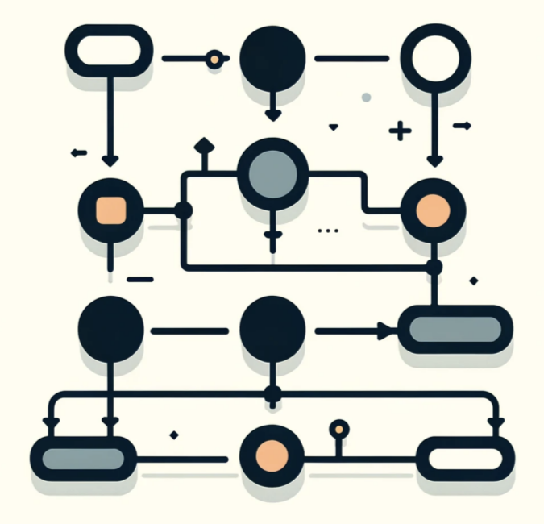

Introducción
Bienvenidos al Portafolio
Este portafolio reúne todos los contenidos estudiados durante el curso de Desarrollo Lógico y Algoritmos. A lo largo del periodo se exploraron conceptos esenciales que permiten comprender cómo se diseñan y estructuran soluciones computacionales, desde la lógica básica hasta temas más avanzados relacionados con máquinas virtuales, redes y bases de datos.
El objetivo de este sitio es presentar de forma clara y organizada los aprendizajes más importantes desarrollados durante el curso, así como servir como referencia para futuros proyectos, tareas o estudios relacionados con la programación y los sistemas informáticos.
Contenido del Portafolio
Dentro de este portafolio se encuentran las siguientes áreas de estudio:
- Conceptos fundamentales de algoritmos y estructuras de control.
- Programación en lenguajes como C y Python.
- Uso y configuración de máquinas virtuales.
- Introducción a protocolos de comunicación como FTP.
- Configuración inicial de dispositivos Cisco.
- Conceptos básicos de SQL y replicación de bases de datos.
- Proyectos aplicados desarrollados por el estudiante.
Este portafolio refleja tanto el progreso académico como el esfuerzo y dedicación puestos en el aprendizaje de cada uno de los temas. También representa la importancia del pensamiento lógico y la resolución de problemas dentro del mundo tecnológico actual.